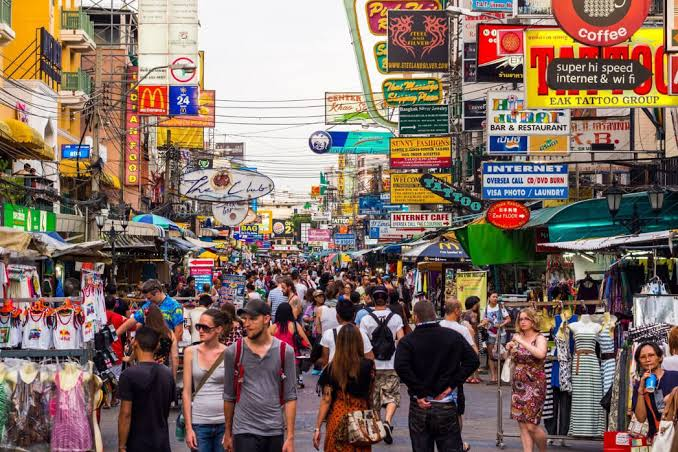

Travel Diary |
Главная | Страны | Советы | Места |

Сегодня Каосан особенно оживает вечером и ночью: зажигаются вывески, открываются бары и многочисленные уличные точки с едой, играет музыка, а сама улица превращается в одну большую пешеходную тусовку. Длина самой улицы — около 410 метров.
От улицы примерно:
Это обычная городская улица, а не платная достопримечательность. Деньги понадобятся уже внутри — на еду, напитки, покупки, массаж, развлечения и посещение отдельных заведений.
На лодке
Один из самых удобных способов — Chao Phraya Express Boat. Нужно доехать по реке до пирса Phra Athit (N13), после чего пройти пешком примерно 10 минут до Каосан Роуд.
Это особенно удобно, если вы до этого гуляли возле реки или Ват Аруна.
Такси / Grab
Из центральных районов Бангкока можно заказать Grab или обычное такси. Из районов Siam/Asok поездка обычно занимает около 20–40 минут в зависимости от пробок.
Стоимость сильно зависит от времени и загруженности дорог.
Автобус
До района Каосана ходят городские автобусы. Например, рядом проходят маршруты 15, 47 и 53.
Из аэропорта Дон Мыанг также можно воспользоваться автобусом A4, который идет в район Каосана; поездка занимает около часа.
Пешком
Если вы уже находитесь возле Большого дворца, Ват Пхо или Санам Луанг, до Каосана можно спокойно дойти пешком.
Каосан = шум, музыка и вечеринки.
Rambuttri = более спокойная прогулка, еда и бары.
Одна из главных достопримечательностей Бангкока находится примерно в километре от Каосана.
Можно совместить:
Большой дворец → Ват Пхо → Ват Арун → Каосан Роуд вечером.
Это уже практически полноценный день знакомства с историческим Бангкоком.
Небольшой буддийский храм прямо возле туристического района Каосана. Он значительно спокойнее самой Каосан Роуд и хорошо подходит, чтобы немного отдохнуть от шума.
Историческая крепость на берегу реки Чао Прайя. Рядом находится небольшой зелёный парк, поэтому сюда можно отправиться после шумной Каосан Роуд, чтобы немного прогуляться в тишине.
От Каосана относительно недалеко до реки и пирса Phra Athit. Отсюда удобно продолжить путешествие на речном транспорте.
Не рассчитывайте на спокойную прогулку вечером. Каосан может быть очень шумной, особенно поздно вечером.
Следите за вещами. В большой толпе лучше держать телефон и кошелёк в закрытом кармане или сумке.
Осторожнее с тук-туками. Перед поездкой обязательно договаривайтесь о цене. Ещё лучше — использовать такси с включённым счётчиком или приложение вроде Grab.
Не соглашайтесь на предложения незнакомцев, которые предлагают «особые шоу», дешёвые экскурсии или поездки в места, куда якобы «сегодня больше нигде не попасть».
Цены для туристов могут быть выше, чем в обычных районах Бангкока. Особенно это касается напитков, еды и некоторых услуг непосредственно на самой туристической улице.
Алкоголь и ночная жизнь — не единственное, ради чего стоит идти сюда. Днём Каосан выглядит совершенно иначе: меньше людей, работают магазины, кафе и туристические агентства.
Если вы делаете туристический маршрут по Бангкоку, лучше поставить Каосан на вечер.
Например:Так вы увидите две совершенно разные стороны Бангкока: древние храмы и исторический центр днём и шумный современный туристический Бангкок ночью.